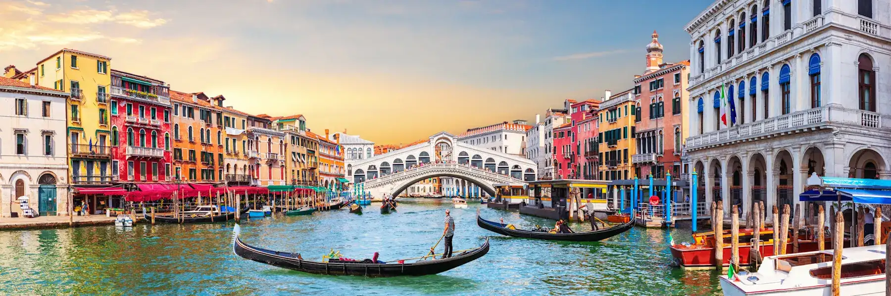

A boot-shaped peninsula in Southern Europe extending into the Mediterranean Sea, known as a cradle of Western civilization.

Tourism in Italy is one of the country’s most important industries because it attracts millions of visitors every year.
Many tourists visit Italy to experience its rich culture and heritage, which reflect the country’s long history, traditions, art, and architecture.

The country also offers different types of tourism such as event-based tourism, where visitors can experience festivals, cultural celebrations, and local traditions.

Traveling around the country is convenient because Italy has well-developed land transportation like trains, buses, and road networks, as well as several airports that connect the country to many international destinations.

Aside from culture and transportation, Italy is also known for its famous food and dining experiences, beautiful nature-based and protected areas, luxury five-star hotels for comfortable stays, and pilgrimage tourism where people visit religious places for spiritual reasons.

Because of these different attractions and experiences, Italy remains one of the most popular tourist destinations in the world.